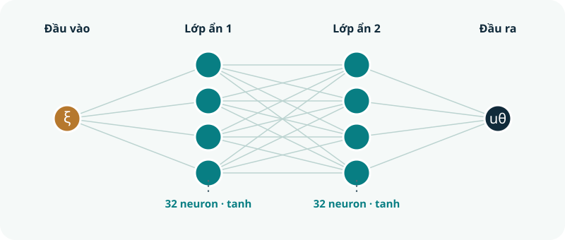
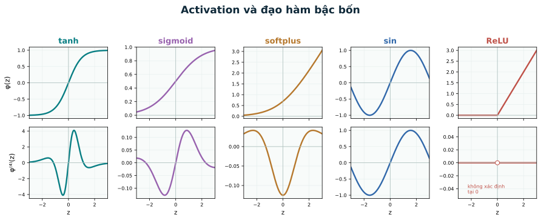

00 · Ý tưởng
PINN học một hàm, không học một bảng nghiệm
Mạng nhận tọa độ \(\xi\) và trả về chuyển vị dự đoán \(u_\theta(\xi)\). Các tham số \(\theta\) được điều chỉnh để hàm này gần thỏa phương trình dầm và bốn điều kiện biên.
01 · Cùng một mô hình
Dầm tựa đơn và bước chuẩn hóa
Dầm dài \(L\), độ cứng uốn \(EI>0\) không đổi, chịu tải đều \(q_0>0\). Quy ước chuyển vị \(w\) dương hướng xuống. Từ phương trình dạng mạnh:
Đặt \(\xi=x/L\) và \(u(\xi)=EIw(L\xi)/(q_0L^4)\). Quy tắc dây chuyền cho \(w^{(4)}=q_0u^{(4)}/EI\), nên:
Sau khi dự đoán \(u\), khôi phục chuyển vị vật lý bằng \(w=q_0L^4u/EI\). Nghiệm giải tích dùng để đánh giá sau huấn luyện là:
02 · Hàm thử có tham số
Chọn \(u_\theta\) đủ trơn
Một mạng fully connected nhỏ với activation tanh định nghĩa ánh xạ \(u_\theta:[0,1]\to\mathbb R\). Ví dụ: \(1\to32\to32\to1\). Vì residual chứa đạo hàm bậc bốn, ReLU không thích hợp cho baseline dạng mạnh: đạo hàm bậc cao của nó bằng 0 hầu khắp nơi hoặc không xác định tại điểm gãy.
PyTorch tính \(u_\theta',u_\theta'',u_\theta''',u_\theta^{(4)}\) bằng automatic differentiation: lặp phép lấy gradient theo đầu vào \(\xi\), với create_graph=True để còn đạo hàm tiếp. Baseline dùng float64.
02a · Nhìn thấy kiến trúc
Mạng gồm những lớp nào?

Mỗi neuron ẩn tính \(z=\sum_k W_k a_k+b\), rồi trả \(a=\phi(z)\). Nếu bỏ activation hoặc chỉ dùng hàm tuyến tính, cả mạng chỉ là một ánh xạ affine và không thể xấp xỉ đường võng của dầm.
So sánh các activation qua đạo hàm bậc bốn

| Activation \(\phi(z)\) | Đặc điểm có ích | Điểm cần lưu ý với dầm \(u^{(4)}=1\) |
|---|---|---|
| \(\tanh z\) | Trơn, có đạo hàm mọi bậc; đầu ra đối xứng quanh 0. | Có thể bão hòa khi \(|z|\) lớn. Lựa chọn baseline để bắt đầu. |
| \(\sigma(z)=1/(1+e^{-z})\) | Trơn, đạo hàm bậc bốn xác định. | Dễ bão hòa và đầu ra không đặt tâm tại 0; nên thử như đối chứng. |
| \(\log(1+e^z)\) (softplus) | Trơn; gần ReLU ở phía dương nhưng vẫn có đạo hàm cao. | Đạo hàm cao có thể rất nhỏ ở vùng bão hòa; cần kiểm tra residual thực tế. |
| \(\sin z\) | Trơn và đạo hàm bậc bốn là chính \(\sin z\). | Có tính tuần hoàn; có thể phù hợp nhưng phụ thuộc thang đầu vào và khởi tạo. |
| \(\max(0,z)\) (ReLU) | Đơn giản, phổ biến ở nhiều mạng học sâu. | Mạng ReLU theo \(\xi\) là hàm tuyến tính từng đoạn, nên đạo hàm bậc bốn bằng 0 hầu khắp nơi: không phù hợp với residual dạng mạnh \(u^{(4)}-1\). |
Các đường cong trên biểu diễn activation đơn lẻ; nghiệm \(u_\theta\) là tổ hợp nhiều neuron và có thể có hình dạng khác.
03 · Vật lý đi vào loss
Từ dạng mạnh đến residual
Chọn \(N_c\) điểm collocation \(\xi_i\in(0,1)\). Mỗi điểm cho sai lệch \(r_\theta(\xi_i)=u_\theta^{(4)}(\xi_i)-1\). Ở hai đầu, kiểm tra cả chuyển vị lẫn mômen, tức \(u_\theta''=0\).
Đây là loss mềm: bốn điều kiện biên có thể vẫn khác 0 sau huấn luyện. Loss thấp chỉ nói mạng khớp tốt trên các điểm và hạng đang được đo, chưa chứng minh nghiệm chính xác trên cả miền.
Điểm miền
Chọn đều theo midpoints hoặc lấy mẫu ngẫu nhiên. Lưu số điểm và cách chọn.
Trọng số
Ghi \(\lambda_{\mathrm{BC}}\); thay đổi nó có thể cải thiện biên nhưng cũng làm bài toán tối ưu khó hơn.
04 · Quy trình huấn luyện
Từ loss đến tham số mạng
- Cố định cấu hình: seed, kiến trúc, \(N_c\), điểm collocation, trọng số loss, optimizer, learning rate và số bước.
- Forward: tính \(u_\theta\) tại điểm miền và hai đầu; dùng autograd lấy đạo hàm.
- Loss: tính riêng \(\mathcal L_{\mathrm{PDE}}\), \(\mathcal L_{\mathrm{BC}}\), rồi tổng có trọng số.
- Backward: xóa gradient cũ, gọi
loss.backward(), rồioptimizer.step(). - Ghi lịch sử: lưu loss tổng và từng thành phần; đo thời gian huấn luyện.
for step in range(steps):
optimizer.zero_grad()
u_c = model(x_collocation)
r = derivative(u_c, x_collocation, 4) - 1.0
u_b = model(x_boundary)
u_b_xx = derivative(u_b, x_boundary, 2)
loss_pde = (r**2).mean()
loss_bc = (u_b**2 + u_b_xx**2).sum()
loss = loss_pde + lambda_bc * loss_bc
loss.backward()
optimizer.step()Đây là sơ đồ; script PyTorch đầy đủ kiểm tra autograd, huấn luyện và xuất CSV. Có thể mở notebook trong Jupyter hoặc Colab.
05 · Đánh giá độc lập
Verify: PINN đã giải đúng chưa?
Đánh giá trên lưới dày \(G=\{\xi_j\}_{j=0}^{400}\) không dùng làm tập collocation trong huấn luyện. Tính nghiệm mạng, mômen chuẩn hóa \(\bar M_\theta=-u_\theta''\), residual và bốn điều kiện biên. So với nghiệm đúng bằng chuẩn sai số tương đối:
\(\omega_j\) là trọng số tích phân số, ví dụ quy tắc hình thang. Kiểm tra thêm \(\max_{\xi_j\in G}|u_\theta^{(4)}(\xi_j)-1|\) và sai lệch biên. Vẽ \(u_\theta\) cùng \(u_*\), mômen cùng nghiệm đúng, sai số theo \(\xi\), và lịch sử loss.
| Kiểm tra | Câu hỏi cần trả lời |
|---|---|
| Loss train | Optimizer có giảm residual và sai lệch biên tại các điểm huấn luyện không? |
| Lưới độc lập | Sai số chuyển vị và mômen phân bố ở đâu? |
| Điều kiện biên | Cả \(u\) lẫn \(u''\) ở hai đầu đã đủ nhỏ chưa? |
| Chi phí và seed | Mất bao lâu để train/dự đoán? Kết quả có ổn định qua ít nhất ba seed không? |
06 · Một biến mỗi lần
Improve: sửa vấn đề đã quan sát
| Dấu hiệu | Thí nghiệm cải thiện | Giữ cố định để so sánh |
|---|---|---|
| Biên sai đáng kể | Tăng \(\lambda_{\mathrm{BC}}\), hoặc dùng \(u_\theta=\xi(1-\xi)N_\theta(\xi)\) để thỏa \(u(0)=u(1)=0\); vẫn kiểm tra \(u''\) ở biên. | Kiến trúc, số bước, điểm miền và seed. |
| Residual kém giữa các điểm train | Tăng \(N_c\) hoặc lấy lại điểm collocation mỗi epoch. | Optimizer, trọng số, số bước và seed. |
| Loss giảm chậm | Thử learning rate thấp hơn; sau Adam có thể thử L-BFGS. | Kiến trúc, dữ liệu, chuẩn sai số và ngân sách. |
| Kết quả thay đổi theo seed | Chạy ít nhất ba seed, báo cáo trung bình và độ phân tán. | Cùng cấu hình và lưới đánh giá. |
Chỉ kết luận cải thiện khi sai số trên lưới độc lập hoặc độ ổn định tốt hơn; báo cáo cả chi phí tăng thêm. Với một lần giải dầm nhỏ, thời gian train PINN là phần quan trọng khi so với FEM.
07 · Đọc để làm được việc
Bài thực hành đầu tiên
- Dẫn xuất phép chuẩn hóa từ \(EIw^{(4)}=q_0\) sang \(u^{(4)}=1\); kiểm tra trực tiếp \(u_*\) thỏa phương trình và bốn điều kiện biên.
- Chạy bài 04 PyTorch; ghi seed, số bước, loss đầu/cuối, \(E_u\), \(E_M\); vẽ đồ thị từ hai CSV.
- Thay đổi một yếu tố: số điểm collocation hoặc trọng số biên. Chạy ít nhất ba seed cho mỗi cấu hình, dùng cùng lưới đánh giá.
- Nộp báo cáo ngắn (Word hoặc LaTeX) có phương trình, loss, bảng cấu hình–sai số–thời gian, hai hình và giải thích kết quả.